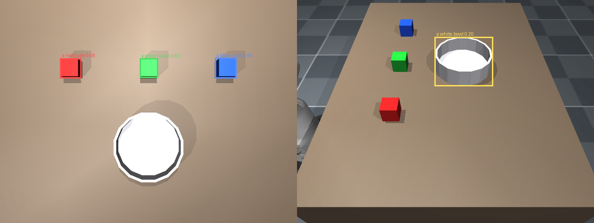
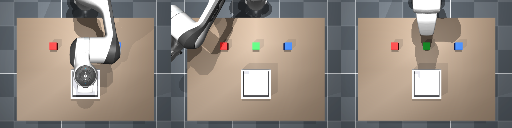

Code-switched speech grounding for open-vocabulary robotic manipulation
Speak or type an instruction in Tamil, English, or Tanglish (Tamil written in Latin script, mixed with English). A dual-ASR router transcribes it, a local 4B language model turns it into a JSON task plan, an open-vocabulary detector grounds the named object in 3D, and an inverse-kinematics controller executes the pick-and-place in MuJoCo. Everything runs locally — no cloud API anywhere in the pipeline.
webapp/ and one command
away if the hosting situation changes.
microphone ─► whisper-large-v3 ─────┐
├─► script + language router ─► transcript
whisper-tamil-medium ───┘ │
▼
Qwen3-4B planner (local)
│ JSON plan
▼
overhead RGB-D ─► OWLv2 open-vocab ─► 3D grounding ─► damped-least-squares IK
│
▼
MuJoCo execution ─► episode log
The target field the planner emits is free text — "a red
cube" — and goes straight to the detector as a query. There is no fixed
object vocabulary anywhere in the system.
Character error rate on six Tamil sentences, read from wav files so room acoustics are out of the loop.
| backend | mean CER | median CER |
|---|---|---|
| whisper-large-v3 (multilingual) | 16.7% | 0.0% |
| whisper-tamil-medium (specialist) | 4.8% | 0.0% |
| routed — what ships | 4.8% | 0.0% |
The median is the honest number. The multilingual model is exact on five of six sentences and then decodes the sixth into Devanagari at 100% CER — its problem is rare total failure, not steady inaccuracy. The specialist never failed that way. Its non-zero scores are sandhi spellings, which are orthographic conventions rather than recognition errors.
| stage | metric | result |
|---|---|---|
| Joint tracking | max error over 3 poses | 0.0066 rad |
| Inverse kinematics | 10 random reachable targets | 10/10 < 5 mm |
| mean position error | 0.44 mm | |
| mean solve time | 0.1 ms | |
| Pick and place | blocks placed in container | 3/3 |
| offset from container centre | 1.7 mm | |
| Perception | 3D grounding error | 0.5 cm typical |
| End to end | 8 utterances, 3 languages | 8/8 |
| episodes logged | 39 · 94.9% success |
Same command repeated, all four models resident, on a 16 GB M5 laptop.
| run | ASR | plan | perceive | total |
|---|---|---|---|---|
| cold | 16.6 s | 4.3 s | 4.0 s | 25.0 s |
| warm | 4.9 s | 1.4 s | 0.9 s | 7.3 s |
The first real microphone test recorded nothing — the machine's input volume was at 27/100. Whisper correctly returned an empty transcript. The planner then invented a fluent instruction from that empty string, the arm executed it, and the run printed PASS. Nothing failed; it succeeded at the wrong thing. Silence and empty transcripts now stop the pipeline, and an amplitude gate catches only true silence — Whisper judges intelligibility better than a threshold does.
The same audio came back as ta, hi and kn
across repeated runs, transcribing Tamil speech into Devanagari or Kannada script.
The router originally dispatched on Tamil script alone, so it skipped the specialist
in exactly the cases that needed it. Any Indic language guess now triggers it.
Planner latency degraded from 2 s to 35 s as each model loaded, and the loop got
slower every iteration. It was not compute — MLX and torch each keep an allocator
pool that survives a forward pass, and with four models resident those pools were
enough to start paging. One clear_cache() call took a plan from 37.5 s
to 1.7 s. Doing it inside the hot path made things worse, so the clears sit at stage
boundaries only.
Qwen3-8B and Qwen3-4B both planned all eight utterances correctly. The 4B is
1.8x faster at half the memory, so it ships. sarvam-m (24B) is the
strongest open model for Tamil and was rejected purely on footprint — at 4-bit it
needs ~13 GB and will not co-reside with the other three models on 16 GB. That is a
hardware constraint, not a quality claim; scripts/bench_planner.py
will settle it on a 24 GB GPU, which this project has not had access to.
MuJoCo 3.12Franka Emika Panda Damped least squares IKOWLv2 Qwen3-4BWhisper large-v3 whisper-tamil-mediumMLX PyTorchGradio LeRobot-compatible parquet
One codebase runs two backends: MLX on Apple Silicon, transformers on
x86 + NVIDIA. src/backend.py selects at import and resolves the model
ids; everything above the model-loading layer is shared.

